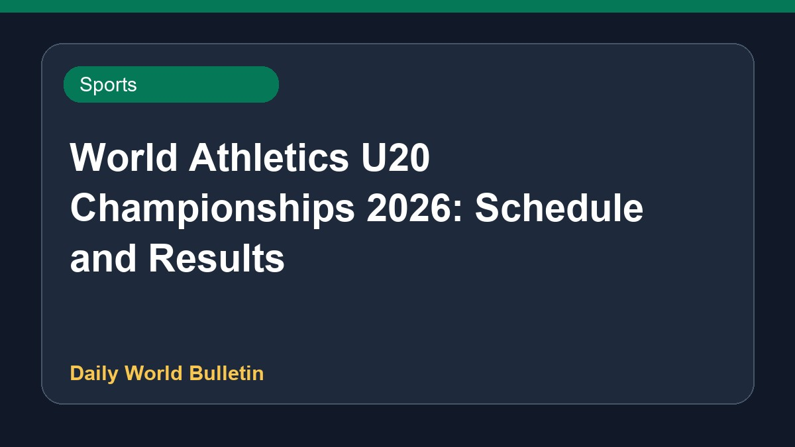

World Athletics U20 Championships 2026: Schedule and Results

The World Athletics U20 Championships 2026 brings together young athletes globally, featuring Indian competitors looking to build on prior success. International coverage highlights strong performances, including American sprinters Mia Maxwell and Tate Taylor advancing through the semifinals. Various university programs are also represented as athletes compete across multiple track and field events. Official schedules and results are updated via Olympic platforms, providing comprehensive tracking for sports enthusiasts following the international youth athletics calendar.
Original source: Sports News Sources
World Athletics U20 Championships 2026: Full schedule and all results - olympics.com ↗
World Athletics U20 Championships 2026: Full schedule and all results - olympics.com ↗